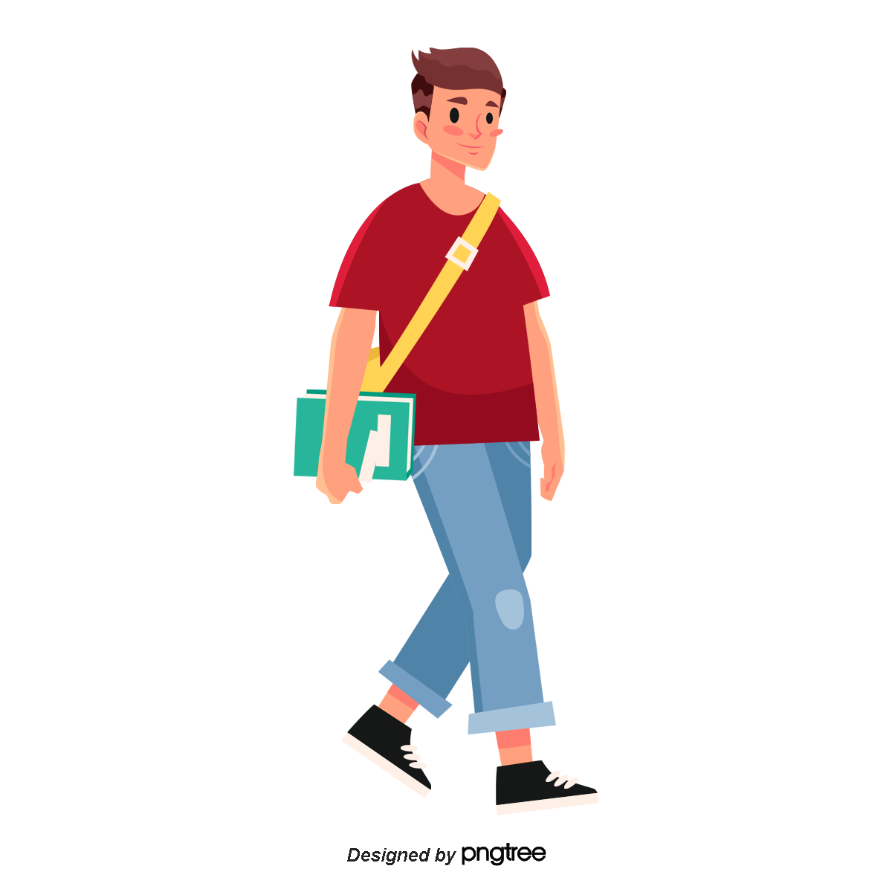

Hi, My name is
Rohit
and I am a passionate

Past Experience

Fullstack Developer at Unified(Sep,2024-Present)
During my internship at Unified as a Full Stack Developer, I developed two foundational projects using HTML, CSS, and JavaScript. This experience allowed me to gain hands-on practice in creating interactive, responsive front-end elements and enhancing my understanding of back-end processes for a complete project lifecycle.

Frontend Develope at Glickmet IT(Jun,2023-Aug,2023)
In my internship at GlickMet IT as a Front-End Developer, I developed a responsive web page for a leading hospitality group using HTML, CSS, and JavaScript. This project strengthened my skills in creating user-friendly, adaptive layouts and delivering high-quality front-end solutions tailored to client needs.

B.Tech (ICE) at NIT JALANDHAR(Dec 2020-Jun,2024)
I earned my B.Tech in Instrumentation and Control Engineering from NIT Jalandhar, where I built a solid foundation in control systems and automation. Alongside my core studies, I developed skills in HTML, CSS, JavaScript, React, and SQL, enhancing my versatility in both engineering and tech.

12th at TMS Ajmer(Jul 2017-Jun,2018)
I completed my 12th grade in the Science stream from TMS Senior Secondary School, Ajmer, focusing on foundational subjects in Physics, Chemistry, and Mathematics. This academic background sparked my interest in engineering and technology.
10th at TMS Ajmer(Jul 2015-Jun,2016)
I completed my 10th grade at TMS Senior Secondary School, Ajmer, gaining a strong grounding in core subjects and developing a disciplined approach to academics that set the foundation for my further studies in science and engineering.